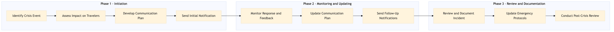

This process document outlines the steps for mass communication during crisis events, focusing on traveler safety and tracking.
| Trigger | Detection of a significant crisis event that affects travelers under the management of Expedia Group or Amex GBT / SAP Concur. |
| Outcome | All affected travelers are promptly informed with relevant safety instructions and updates, minimizing panic and ensuring their well-being. |
| Systems | SAP S/4HANA Snowflake Salesforce Tableau AWS SageMaker Kafka SAP Analytics Cloud Workday |

Click to enlarge
| Step | Name & Pain Point | Role | System | Input | Output | KPI | Flags |
|---|---|---|---|---|---|---|---|
| 1.1 | Identify Crisis Event Delayed identification of crisis | Duty of Care Manager | SAP S/4HANA | Crisis event details | Confirmed crisis event | Time to identify crisis < 15 minutes | ◆ Decision |
| 1.2 | Assess Impact on Travelers Incomplete or inaccurate assessment | Duty of Care Manager | Snowflake | Traveler data | Affected traveler list | Time to assess impact < 30 minutes | ◆ Decision |
| 1.3 | Develop Communication Plan Inadequate communication plan | Duty of Care Manager | Salesforce | Crisis event details, affected traveler list | Communication plan | Plan developed within 1 hour | ◆ Decision |
| 1.4 | Send Initial Notification Failed notification delivery | Duty of Care Manager | Tableau, AWS SageMaker | Communication plan | Sent notifications | Notifications sent within 2 hours | ◆ Decision |
| 1.5 | Monitor Response and Feedback Lack of traveler feedback | Duty of Care Manager | Kafka, Snowflake | Traveler responses | Feedback analysis | Response monitored within 30 minutes | ◆ Decision |
| 1.6 | Update Communication Plan Stale communication strategy | Duty of Care Manager | Salesforce, Tableau | Feedback analysis | Updated communication plan | Plan updated within 1 hour | ◆ Decision |
| 1.7 | Send Follow-Up Notifications Delayed follow-up communications | Duty of Care Manager | Tableau, AWS SageMaker | Updated communication plan | Sent follow-up notifications | Follow-ups sent within 2 hours | ◆ Decision |
| 1.8 | Review and Document Incident Incomplete incident documentation | Duty of Care Manager | SAP Analytics Cloud, Workday | Incident details, communication plan effectiveness | Incident report | Report completed within 24 hours | ◆ Decision |
| 1.9 | Update Emergency Protocols Outdated emergency procedures | Duty of Care Manager | SAP Concur T2, SAP S/4HANA | Incident report | Updated emergency protocols | Protocols updated within 1 week | ◆ Decision |
| 1.10 | Conduct Post-Crisis Review Lack of post-crisis analysis | Duty of Care Manager | SAP Analytics Cloud, Workday | Incident report, updated protocols | Post-crisis review report | Review completed within 1 month | ◆ Decision |